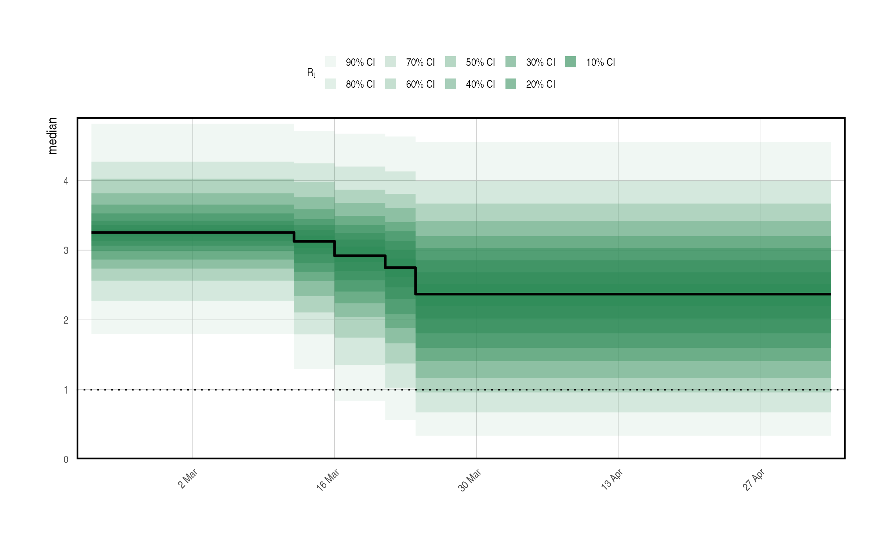
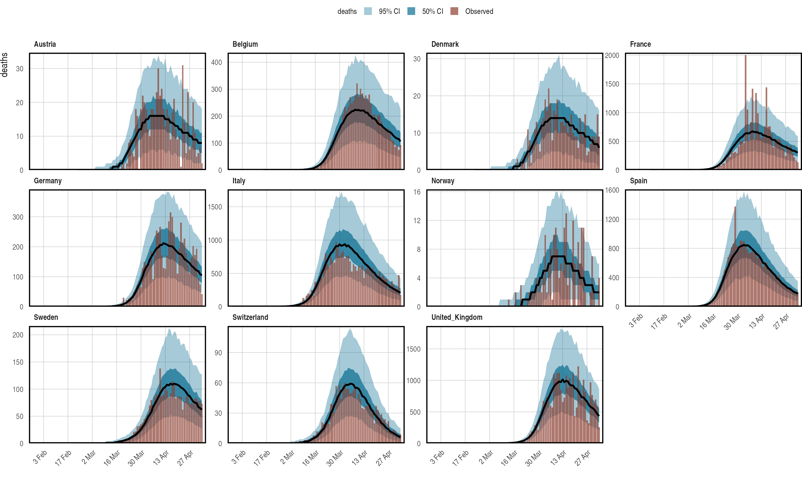
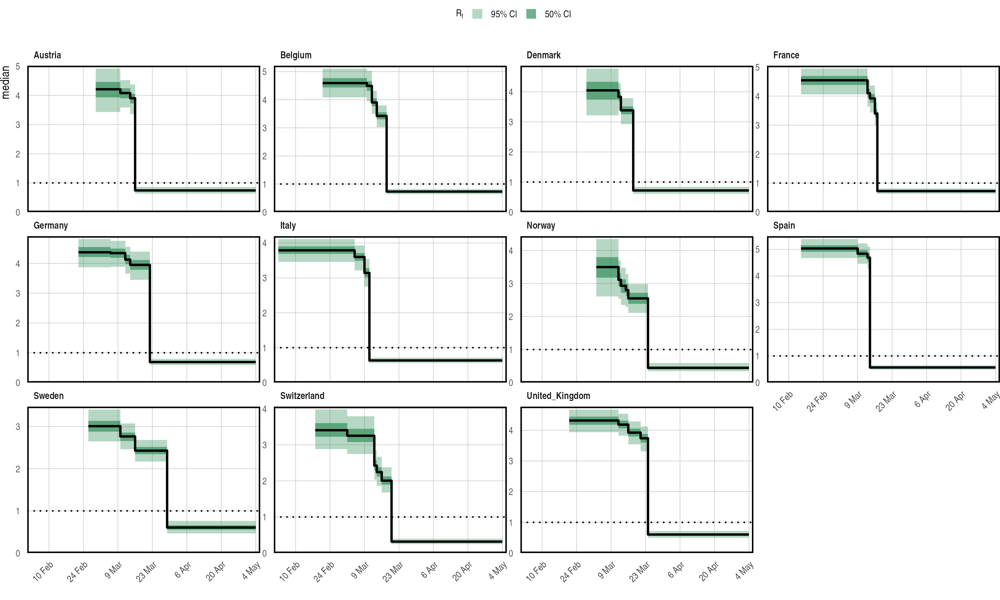
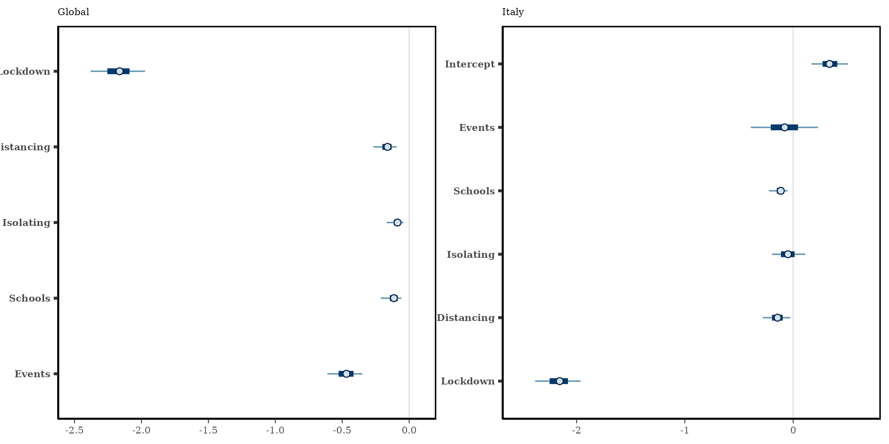
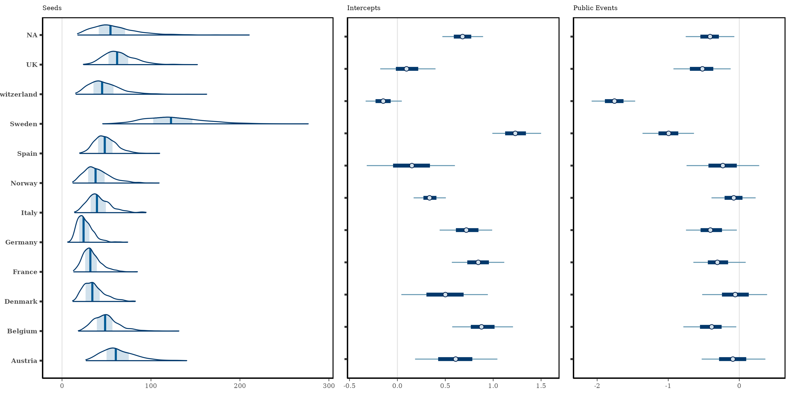
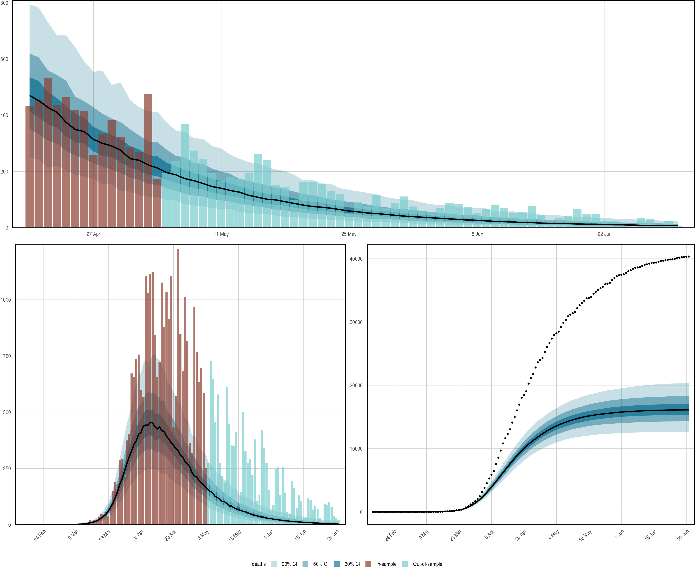

The Spanish flu example considered inferring the instantaneous reproduction number over time in a single population. Here, we demonstrate some of the more advanced modeling capabilities of the package.
Consider modeling the evolution of an epidemic in multiple distinct regions. As discussed in the model description, one can always approach this by modeling each group separately. It was argued that this approach is fast, because models may be fit independently. Nonetheless, often there is little high quality data for some groups, and the data does little to inform parameter estimates. This is particularly true in the early stages of an epidemic. Joining regions together through hierarchical models allows information to be shared between regions in a natural way, improving parameter estimates while still permitting between group variation.
In this section, we use a hierarchical model to estimate the effect of non-pharmaceutical interventions (NPIs) on the transmissibility of Covid-19. We consider the same setup as Flaxman, Mishra, Gandy, et al. (2020): attempting to estimate the effect of a set of measures that were implemented in March 2020 in 11 European countries during the first wave of Covid-19. This will be done by fitting the model to daily death data. The same set of measures and countries that were used in Flaxman, Mishra, Gandy, et al. (2020) are also used here. Flaxman, Mishra, Scott, et al. (2020) considered a version of this model that used partial pooling for all NPI effects. Here, we consider a model that uses the same approach.
This example is not intended to be a fully rigorous statistical analysis. Rather, the intention is to demonstrate partial pooling of parameters in epidemia and how to infer their effect sizes. We also show how to forecast observations into the future, and how to undertake counterfactual analyses.
Begin by loading required packages. dplyr will be used to manipulate the data set, while rstanarm is used to define prior distributions.
We use a data set EuropeCovid2, which is provided by
epidemia. This contains daily death and case data in the 11
countries concerned up until the 1st July 2020. The data derives from
the WHO COVID-19 explorer as of the 5th of January 2021. This differs
from the data used in Flaxman, Mishra, Gandy, et al. (2020), because case and death counts have
been adjusted retrospectively as new information came to light.
epidemia also has a data set EuropeCovid which contains the
same data as that in Flaxman, Mishra, Gandy, et al. (2020), and this could alternatively be used
for this exercise.
EuropeCovid2 also contains binary series representing the set of
five mitigation measures considered in Flaxman, Mishra, Gandy, et al. (2020). These correspond to
the closing of schools and universities, the banning of public events,
encouraging social distancing, requiring self isolation if ill, and
finally the implementation of full lockdown. The dates at which these
policies were enacted are exactly the same as those used in
Flaxman, Mishra, Gandy, et al. (2020).
Load the data set as follows.
## # A tibble: 6 × 11
## # Groups: country [1]
## id country date cases deaths schools_universities
## <chr> <chr> <date> <int> <int> <int>
## 1 AT Austria 2020-01-03 0 0 0
## 2 AT Austria 2020-01-04 0 0 0
## 3 AT Austria 2020-01-05 0 0 0
## 4 AT Austria 2020-01-06 0 0 0
## 5 AT Austria 2020-01-07 0 0 0
## 6 AT Austria 2020-01-08 0 0 0
## # ℹ 5 more variables: self_isolating_if_ill <int>, public_events <int>,
## # lockdown <int>, social_distancing_encouraged <int>, pop <int>Recall that for each country, epidemia will use the earliest date
in data as the first date to begin seeding infections. Therefore,
we must choose an appropriate start date for each group. One option is
to use the same rule as in Flaxman, Mishra, Gandy, et al. (2020), and assume that seeding begins
in each country 30 days prior to observing 10 cumulative deaths. To do
this, we filter the data frame as follows.
This leaves the following assumed start dates.
## # A tibble: 6 × 3
## country start end
## <chr> <date> <date>
## 1 Austria 2020-02-23 2020-06-30
## 2 Belgium 2020-02-15 2020-06-30
## 3 Denmark 2020-02-22 2020-06-30
## 4 France 2020-02-09 2020-06-30
## 5 Germany 2020-02-16 2020-06-30
## 6 Italy 2020-01-28 2020-06-30Although data contains observations up until the end of June, we
fit the model using a subset of the data. We hold out the rest to
demonstrate forecasting out-of-sample. Following Flaxman, Mishra, Gandy, et al. (2020), the final
date considered is the 5th May.
We have seen several times now that epidemia require the user to specify three model components: transmission, infections, and observations. These are now considered in turn.
Country-specific reproduction numbers \(R^{(m)}_{t}\) are expressed in terms of the control measures. Since the measures are encoded as binary policy indicators, reproduction rates must follow a step function. They are constant between policies, and either increase or decrease as policies come into play. The implicit assumption, of course, is that only control measures may affect transmission, and that these effects are fully realized instantaneously.
Let \(t^{(m)}_{k} \geq 0\), \(k \in \{1,\ldots,5\}\) be the set of integer times at which the \(k\)th control measure was enacted in the \(m\)th country. Accordingly, we let \(I^{(m)}_{k}\), \(k \in \{1,\ldots,5\}\) be a set of corresponding binary vectors such that \[\begin{equation} I^{(m)}_{k,t} = \begin{cases} 0, & \text{if } t < t^{(m)}_k \\ 1. & \text{if } t \geq t^{(m)}_k \end{cases} \end{equation}\] Reproduction numbers are mathematically expressed as \[\begin{equation} R^{(m)}_{t} = R' g^{-1}\left(b^{(m)}_0 + \sum_{k=1}^{5}\left(\beta_k + b^{(m)}_k\right)I^{(m)}_{k,t}\right), \end{equation}\] where \(R' = 3.25\) and \(g\) is the logit-link. Parameters \(b^{(m)}_0\) are country-specific intercepts, and each \(b^{(m)}_k\) is a country effect for the \(k\)th measure. The intercepts allow each country to have its own initial reproduction number, and hence accounts for possible variation in the inherent transmissibility of Covid-19 in each population. \(\beta_k\) is a fixed effect for the \(k\)th policy. This quantity corresponds to the average effect of a measure across all countries considered.
Control measures were implemented in quick succession in most countries. For some countries, a subset of the measures were in fact enacted simultaneously. For example, Germany banned public events at the same time as implementing lockdown. The upshot of this is that policy effects are highly colinear and may prove difficult to infer with uninformative priors.
One potential remedy is to use domain knowledge to incorporate information into the priors. In particular, it seems a priori unlikely that the measures served to increase transmission rates significantly. It is plausible, however, that each had a significant effect on reducing transmission. A symmetric prior like the Gaussian does not capture this intuition and increases the difficulty in inferring effects, because they are more able to offset each other. This motivated the prior used in Flaxman, Mishra, Gandy, et al. (2020), which was a Gamma distribution shifted to have support other than zero.
We use the same prior in our example. Denoting the distribution of a Gamma random variable with shape \(a\) and scale \(b\) by \(\text{Gamma}(a, b)\), this prior is \[\begin{equation} -\beta_k - \frac{\log(1.05)}{6} \sim \text{Gamma}(1/6, 1). \label{eq:betaprior} \end{equation}\] The shift allows the measures to increase transmission slightly.
All country-specific parameters are partially pooled by letting \[\begin{equation} b^{(m)}_k \sim N(0, \sigma_k), \end{equation}\] where \(\sigma_k\) are standard deviations, \(\sigma_0 \sim \text{Gamma}(2, 0.25)\) and \(\sigma_k \sim \text{Gamma}(0.5, 0.25)\) for all \(k > 0\). This gives the intercept terms more variability under the prior.
The transmission model described above is expressed programmatically as follows.
rt <- epirt(formula = R(country, date) ~ 0 + (1 + public_events +
schools_universities + self_isolating_if_ill +
social_distancing_encouraged + lockdown || country) +
public_events + schools_universities + self_isolating_if_ill +
social_distancing_encouraged + lockdown,
prior = shifted_gamma(shape = 1/6, scale = 1, shift = log(1.05)/6),
prior_covariance = decov(shape = c(2, rep(0.5, 5)), scale = 0.25),
link = scaled_logit(6.5))The operator || is used rather than | for random effects.
This ensures that all effects for a given country are independent, as
was assumed in the model described above. Using | would
alternatively give a prior on the full covariance matrix, rather than on
the individual \(\sigma_i\) terms. The argument prior reflects
Equation \(\eqref{eq:betaprior}\). Since country effects are assumed
independent, the decov prior reduces to assigning Gamma priors to
each \(\sigma_i\). By using a vector rather than a scalar for the
shape argument, we are able to give the prior on the intercepts a
larger shape parameter.
Infections are kept simple here by using the basic version of the model. That is to say that infections are taken to be a deterministic function of seeds and reproduction numbers, propagated by the renewal process. Extensions to modeling infections as parameters and adjustments for the susceptible population are not considered. The model is defined as follows.
inf <- epiinf(gen = EuropeCovid$si, seed_days = 6)EuropeCovid$si is a numeric vector giving the serial interval
used in Flaxman, Mishra, Gandy, et al. (2020). As in that work, we make no distinction between
the generation distribution and serial interval here.
In order to infer the effects of control measures on transmission, we must fit the model to data. Here, daily deaths are used. In theory, additional types of data can be included in the model, but such extension are not considered here. A simple intercept model is used for the infection fatality rate (IFR). This makes the assumption that the IFR is constant over time. The model can be written as follows.
deaths <- epiobs(formula = deaths ~ 1, i2o = EuropeCovid2$inf2death,
prior_intercept = normal(0,0.2), link = scaled_logit(0.02))By using link = scaled_logit(0.02), we let the IFR range between
\(0\%\) and \(2\%\). In conjunction with the symmetric prior on the
intercept, this gives the IFR a prior mean of \(1\%\).
EuropeCovid2$inf2death is a numeric vector giving the same
distribution for the time from infection to death as that used in
Flaxman, Mishra, Gandy, et al. (2020).
In general, epidemia’s models should be fit using Hamiltonian Monte Carlo. For this example, however, we use Variational Bayes (VB) as opposed to full MCMC sampling. This is because full MCMC sampling of a joint model of this size is computationally demanding, due in part to renewal equation having to be evaluated for each region and for each evaluation of the likelihood and its derivatives. Nonetheless, VB allows rapid iteration of models and may lead to reasonable estimates of effect sizes. For this example, we have also run full MCMC, and the inferences reported here are not substantially different.
The flu article gave an example of using posterior predictive checks. It is also useful to do prior predictive checks as these allow the user to catch obvious mistakes that can occur when specifying the model, and can also help to affirm that the prior is in fact reasonable.
In epidemia we can do this by using the priorPD = TRUE flag
in epim(). This discards the likelihood component of the
posterior, leaving just the prior. We use Hamiltonian Monte Carlo over
VB for the prior check, partly because sampling from the prior is quick
(it is the likelihood that is expensive to evaluate). In addition, we
have defined Gamma priors on some coefficients, which are generally
poorly approximated by VB.
args <- list(rt = rt, inf = inf, obs = deaths, data = data, seed = 12345,
refresh = 0)
pr_args <- c(args, list(algorithm = "sampling", iter = 1e3, prior_PD = TRUE))
fm_prior <- do.call(epim, pr_args)Figure 1.1 shows approximate samples of \(R_{t,m}\) from the prior distribution. This confirms that reproduction numbers follow a step function, and that rates can both increase and decrease as measures come into play.
## Warning: `aes_string()` was deprecated in ggplot2 3.0.0.
## ℹ Please use tidy evaluation idioms with `aes()`.
## ℹ See also `vignette("ggplot2-in-packages")` for more information.
## ℹ The deprecated feature was likely used in the epidemia package.
## Please report the issue at
## <https://github.com/ImperialCollegeLondon/epidemia/issues>.
## This warning is displayed once per session.
## Call `lifecycle::last_lifecycle_warnings()` to see where this warning was
## generated.## Warning: Using `size` aesthetic for lines was deprecated in ggplot2 3.4.0.
## ℹ Please use `linewidth` instead.
## ℹ The deprecated feature was likely used in the epidemia package.
## Please report the issue at
## <https://github.com/ImperialCollegeLondon/epidemia/issues>.
## This warning is displayed once per session.
## Call `lifecycle::last_lifecycle_warnings()` to see where this warning was
## generated.
Figure 1.1: A prior predictive check for reproduction numbers \(R_t\) in the multilevel model. Only results for the United Kingdom are presented here. The prior median is shown in black, with credible intervals shown in various shades of green. The check appears to confirm that \(R_t\) follows a step-function.
The model will be fit using Variational Bayes by using
algorithm = "fullrank" in the call to epim(). This is
generally preferable to "meanfield" for these models, largely
because "meanfield" ignores posterior correlations. We decrease
the parameter tol_rel_obj from its default value, and increase
the number of iterations to aid convergence.
args$algorithm <- "fullrank"; args$iter <- 5e4; args$tol_rel_obj <- 1e-3
fm <- do.call(epim, args)A first step in evaluating the model fit is to perform posterior
predictive checks. This is to confirm that the model adequately explains
the observed daily deaths in each region. This can be done using the
command plot_obs(fm, type = "deaths", levels = c(50, 95)). The
plot is shown in Figure 1.2.

Figure 1.2: Posterior predictive checks. Observed daily deaths (red) is plotted as a bar plot. Credible intervals from the posterior are plotted in shades of blue, in addition to the posterior median in black. Each panel shows the data for a single country.
Figure 1.2 suggest that the epidemic was
bought under control in each group considered. Indeed, one would expect
that the posterior distribution for reproduction numbers lies largely
below one in each region. Figure 1.3 is the
result of plot_rt(fm, step = T, levels = c(50,95)), and confirms
this.

Figure 1.3: Inferred reproduction numbers in each country. Credible intervals from the posterior are plotted in shades of green, in addition to the posterior median in black. Each panel shows the data for a single country.
In epidemia, estimated effect sizes can be visualized using the
plot.epimodel method. This serves a similar purpose to
plot.stanreg in rstanarm, providing an interface to the
bayesplot package. The models in epidemia often have many
parameters, some of which pertain to a particular part of the model
(i.e. transmission), and some which pertain to particular groups (i.e.,
country-specific terms). Therefore plot.epimodel has arguments
par_models, par_types and par_groups, which
restrict the parameters considered to particular parts of the model.
As an example, credible intervals for the global coefficients \(\beta_i\)
can be plotted using the command
plot(fm, par_models = "R", par_types = "fixed"). This leads to
the left plot in Figure 1.4.
Figure 1.4 shows a large negative
coefficient for lockdown, suggesting that this is on average the most
effective intervention. The effect of banning public events is the next
largest, while the other policy effects appear closer to zero. Note that
the left plot in Figure 1.4 shows only global
coefficients, and does not show inferred effects in any given country.
To assess the latter, one must instead consider the quantities
\(\beta_i + b^{(m)}_i\). We do this by extracting the underlying draws
using as.matrix.epimodel, as is done below for Italy.
beta <- as.matrix(fm, par_models = "R", par_types = "fixed")
b <- as.matrix(fm, regex_pars = "^R\\|b", par_groups = "Italy")
mat <- cbind(b[,1], beta + b[,2:6])
labels <- c("Events", "Schools", "Isolating", "Distancing", "Lockdown")
colnames(mat) <- c("Intercept", labels)
Figure 1.4: Left: Global Effect sizes for the five policy measures considered. Right: Effect sizes specific to Italy. The global and country-specific effects may differ because the effects are partially pooled.
Calling bayesplot::mcmc_intervals(mat) leads to the results shown
in the right panel of Figure 1.4.
Figure 1.4 has relatively narrow intervals for many of the effect sizes. This appears to be an artifact of using Variational Bayes. In particular, when repeating this analysis with full MCMC, we observe that the intervals for all policies other than lockdown overlap with zero.
Consider now the role of partial pooling in this analysis. Figure 1.3 shows that Sweden did enough to reduce \(R\) below one. However, it did so without a full lockdown. Given the small effect sizes for other measures, the model must explain Sweden using the country-specific terms. Figure 1.5 shows estimated seeds, intercepts and the effects of banning public events for each country. Sweden has a lower intercept than other terms which in turn suggests a lower \(R_0\) - giving the effects less to do to explain Sweden. There is greater variability in seeding, because the magnitude of future infections becomes less sensitive to initial conditions when the rate of growth is lower. Figure 1.5 shows that the model estimates a large negative coefficient for public events in Sweden. This is significantly larger then the effects for other policies - which are not reported here. However, the idiosyncrasies relating to Sweden must be explained in this model by at least one of the covariates, and the large effect for public policy in Sweden is most probably an artifact of this. Nonetheless, the use of partial pooling is essential for explaining difference between countries. If full pooling were used, effect sizes would be overly influenced by outliers like Sweden. This argument is made in more detail in Flaxman, Mishra, Scott, et al. (2020).

Figure 1.5: Left: Inferred daily seeded infections in each country. These have been assumed to occur over a period of 6 days. Middle: Estimated Intercepts in the linear predictor for reproduction numbers. Right: Country-specific effect sizes corresponding to the banning of public events.
Forecasting within epidemia is straightforward, and consists of constructing a new data frame which is used in place of the original data frame. This could, for example, change the values of covariates, or alternatively include new observations in order to check the out-of-sample performance of the fitted model.
Recall that EuropeCovid2 holds daily death data up until the end
of June 2020, however we only fitted the model up until the \(5\)th May.
The following constructs a data frame newdata which contains the
additional observations. Note that we are careful to select the same
start dates as in the original data frame.
newdata <- EuropeCovid2$data
newdata <- filter(newdata, date > date[which(cumsum(deaths) > 10)[1] - 30])This data frame can be passed to plotting functions plot_rt(),
plot_obs(), plot_infections() and
plot_infectious(). If the raw samples are desired, we can also
pass as an argument to posterior_rt(), posterior_predict()
etc. The top panel of Figure 1.6 is the
result of using the command
plot_obs(fm, type = "deaths", newdata = newdata, groups = "Italy").
This plots the out of sample observations with credible intervals from
the forecast.
Counterfactual scenarios are also easy. Again, one simply has to modify the data frame used. In this case we shift all policy measures back three days.
shift <- function(x, k) c(x[-(1:k)], rep(1,k))
days <- 3
newdata <- mutate(newdata,
lockdown = shift(lockdown, days),
public_events = shift(public_events, days),
social_distancing_encouraged = shift(social_distancing_encouraged, days),
self_isolating_if_ill = shift(self_isolating_if_ill, days),
schools_universities = shift(schools_universities, days)
)The bottom panel of Figure 1.6 visualizes
the counterfactual scenario of all policies being implemented in the UK
three days earlier. Deaths are projected over both the in-sample period,
and the out-of-sample period. The left plot is obtained using
plot_obs(fm, type = "deaths", newdata = newdata, groups = "United_Kingdom"),
while the right plot adds the cumulative = TRUE argument. We reiterate
that these results are not intended to be fully rigorous: they are
simply there to illustrate usage of epidemia.

Figure 1.6: Forecasts and counterfactual scenarios. All results pertain to the United Kingdom. Top: An out-of-sample forecast for daily deaths. Bottom: Results corresponding to a a counterfactual whereby all policies were implemented 3 days earlier. The left plot shows credible intervals for daily deaths under this scenario. The right presents cumulative deaths. The black dotted line shows observed cumulative deaths.